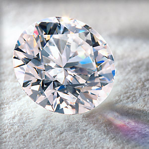

2018-07-24
欢迎收听地球电讯，今天的热点事件里，有三个最值得你了解。
先来看第一件事，最近科学家发现，在咱们脚底下100多公里深的地方，埋藏着很多钻石。说起钻石，咱们都知道它的光芒特别耀眼，这种耀眼的光芒，专门有一个词来形容，叫钻石火彩。一会儿咱们来说说钻石火彩是怎么形成的。发现钻石->钻石火彩
再来看第二件事，最近日本科学家发明了一个能发光的小设备，这个设备可以放到人的身体里，帮人治疗癌症。说起能植入人体的设备，最常见的就是芯片了。待会儿咱们来说说，往身体里植入芯片能起到什么作用。放入人体可治疗癌症的发光小设备->身体植入芯片
最后一件事，最近有一条珍贵的波斯地毯，正在美国大都会艺术博物馆展出。说起这个大都会艺术博物馆，除了它本身名气大，它每年举办的慈善舞会，也特别有名，被称为是“时尚界的奥斯卡”。一会儿咱们就来说说这个慈善舞会。大都会艺术博物馆->慈善舞会
好，下面咱们就正式开始。
先来看第一条新闻，根据美国麻省理工学院官网报道，最近有科学家研究发现，在咱们脚底下100多公里深的地方，埋藏着大量的钻石。不过你也别激动，按照现在的钻地技术，它们一时半会儿还挖不出来呢。科学发现 挖不出来
说起钻石，一般钻石的表面都会被切割成很多个面儿，在光底下一照，特别耀眼。钻石耀眼

下面咱们要说的知识，就跟这种光芒有关。钻石的这种光芒，叫钻石火彩，火焰的火，彩虹的彩。那这种活彩是怎么来的呢？钻石火彩
其实它的原理，就跟下雨以后出现彩虹差不多。下雨以后，阳光照在空气里的小水滴上，照进去的时候是白光，从水滴里出来的时候，就变成了红橙黄绿蓝靛紫，各种颜色的光。我们平时看太阳光是白色的，但太阳光通过了水滴以后，各种颜色的光就都分散开了。原理 彩虹
钻石也是一样，你可以把钻石看成一个有棱有角的水滴，白光照进来，光就会被分散，分散成五颜六色的光，也就出现了我们看到的钻石火彩。一般来说，钻石切割得越好，杂质越少，它的火彩就会越好看。彩虹->钻石
说完了地底下的钻石，还有钻石火彩，咱们来看第二条新闻。自然杂志旗下的生物医学工程期刊，最近发表了一项研究，日本的科学家发明了一种新的设备，非常小，可以放到人和动物的身体里，上面还有个灯，能发出红色和绿色的光。科学家说，可以利用这些红色、绿色的光，来杀死身体里的癌细胞，治疗癌症。新研究，用光治疗癌症
听到这，你可能觉得不靠谱，拿光照一照，就能治疗癌症了？有这么容易吗？其实啊，把这个小装置放在身体以后，病人还要吃药的，这种药会让肿瘤——也就是癌细胞聚集的地方，变得怕光。亮红光的时候，肿瘤会停止生长，不再变大；而亮绿光的时候，肿瘤就开始缩小。是不是还挺神奇的？解误 还需吃药使肿瘤怕光
说起能放到人身体里的小装置，还有一种常见的，可以植入人体内的装置，那就是芯片。那把芯片放到身体里，有什么用呢？植入人体->芯片
在20年前，有一个英国科学家拿自己做了个实验，他往身体里植入了一枚芯片。然后他可以用这个芯片去开灯、开门。后来到了2006年，有一家美国公司，把芯片植入到员工的身体里。这样他们上下班进个门什么的，就不用刷卡了，拿身体里的芯片感应一下，门就开了。举例：科学家，公司
有一些科技爱好者，觉得植入芯片这个事情很酷，他们也会尝试给自己植入芯片，这样就可以做好多新奇的事情，比如，不输入密码，也能登陆电脑。科技爱好者
听完这些芯片植入身体的用处，你是不是觉得挺不靠谱的。这也没啥正经用处啊。嗯，坦率说，目前植入芯片，的确没什么特别重要的作用。不过呢，未来可能会有大用处。比如，咱们去医院看病要带病历本，很麻烦。如果能把病人的病历，做成电子版，然后存到人体芯片里，这样医生在看病历的时候，就会很方便。电子病历
其实建立完善的电子病历数据库，就行了吧。可以用指纹或者人脸等生物特征识别。不过，并不是每个医生都有这个权限获取病人数据都吧，隐私问题也很重要。对这个问题一直很模糊，希望以后能慢慢变清晰。
尤其是一些车祸啊、急诊受伤的病人，只要扫一下人体芯片，就能知道他得过什么病，对什么药过敏，医生能快速地知道这些信息，就能更快地抢救生命。怎么用
说完了可以放进身体里治疗癌症的小灯，还有人体植入的芯片。咱们来看最后一条新闻，根据新华网的报道，最近有一条特别珍贵的波斯地毯，正在美国纽约的大都会艺术博物馆展出。这条地毯叫“瓦格纳”花园地毯，有着300多年的历史，是苏格兰一家博物馆的镇馆之宝，这是它第一次走出苏格兰，来到美国展出。波斯地毯 大都会艺术博物馆
说起纽约的大都会艺术博物馆，它可是世界四大博物馆之一，跟法国卢浮宫、英国大英博物馆，还有俄罗斯艾蜜塔什博物馆，那都是并列的。博物馆称号
不过下面咱们重点要说的，不是这家博物馆，而是在这里每年都要举办的一场慈善舞会。你知道美国电影界的最高奖是奥斯卡，而这个大都会艺术博物馆的慈善舞会，就被称作是“时尚界的奥斯卡”。很多大明星，都参加这个舞会，比方说吴亦凡、章子怡、范冰冰，还有很多国外的大牌明星。慈善舞会，“时尚界的奥斯卡”
这个慈善舞会的主题是筹钱，所以门票特别贵，3万美金一张，差不多20万人民币。像去年的慈善舞会，总共筹到了1200万美元，相当于是8000多万人民币。这些钱不是要捐给穷人，而是会用到大都会博物馆下面的一个时装研究院，给他们做一年整年的资金。昂贵 慈善目的
最后，给你留一道思考题：刚才咱们讲到了在人体当中植入芯片，假如现在给你一个机会，往身体里植入芯片，你希望它能帮助你做什么呢？
我希望它能够记录下我对各种生理特征，并有相应的程序能够计算出自己当时的身体状况、情绪状态。希望自己能够身心健康。不过这是自己绝对的隐私，不希望被除了自己以外的任何人知道。不然真的会像三体人那样，不会说谎，思想及一切都是透明的。